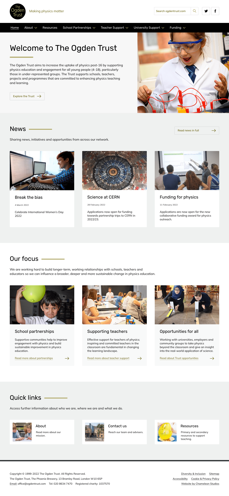

The Ogden Trust (2021-2022)
Sector: Education
Highlights: RNIB Accessibility Audit, WAVE Accessibility tool, keyboard friendly dropdown menus
A central theme of the new Ogden Trust website has been to achieve good Accessibility. To meet this aim, The Ogden Trust hired the RNIB to produce reports throughout the build. showing how we could create the most accessible website possible.
These reports highlighted a number of improvements I made, including responsive & clearly labelled data tables, use of accessibility friendly labels on forms and buttons, correct alt tag descriptions on images, adding ARIA states and landmarks to the HTML, good colour contrast and many more.
Throughout the build, I used the WAVE (Web Accessibility Evaluation Tool) by WebAIM in Google Chrome to catch as many accessibility issues as possible.
We wanted the website to work for keyboard users & screen-readers as well as desktop & tablet users. So the aim was to make the links on the website accessible via the tab key with clear ‘focus’ outline states. I built the website header navigation using hand-coded javascript, to enable keyboard users to tab through each link, then press the enter key to ‘open-close’ submenu drop downs , as well as automatically close the submenu when tabbing onto the next menu item.
I turned the Ogden Trust designs into a fully functioning website with the aid of a Chrome plugin called ‘Perfect Pixel’. This plugin is the digital equivalent of tracing paper- allowing you to overlay a reduced opacity JPG image of the design onto the website and tweak the padding, margins and fonts until everything is perfectly lined up.
